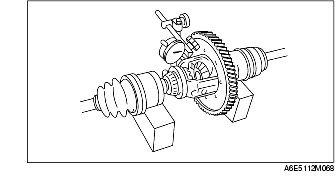

PRECONTROL DIFERENCIAL
B3E051527100101
Control holgura
1. Medir la holgura mediante el procedimiento siguiente.
-
(1) Instalar los ejes de transmisión izquierdo y derecho en el conjunto diferencial.
-
(2) Fijar los ejes de transmisión en los bloques en V, como se muestra en la figura.
-
(3) Medir la holgura de ambos piñones satélites.

-
• Si no está conforme a lo especificado, ajustar seleccionando e instalando unas arandelas de empuje entre la caja y el engranaje planetario.
-
Holgura
-
0-0,1 mm (0-0,004 in)
-
Advertencia
-
• Utilizar las arandelas de empuje con el mismo espesor en ambos lados.
Espesor arandela de empuje
mm (in)
|
2,0 (0,079)
|
2,1 (0,083)
|
2,2 (0,087)
|
-
• Si supera las especificaciones aun cuando se usa una arandela de empuje de 2,2 mm (0,087 in), sustituir el conjunto diferencial.